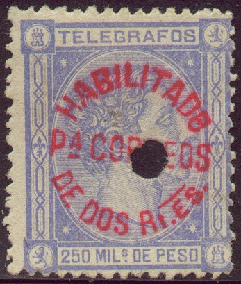
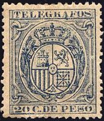
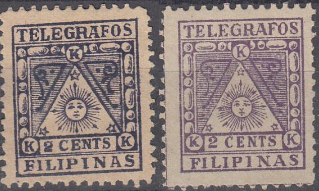
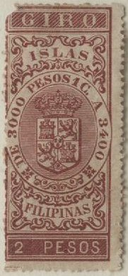

Here with overprint, to be used as postage stamp.
Return To Catalogue - Philippines 1854-1855 - Philippines 1859-1870 - Philippines 1871-1881 - Philippines 1881-1900
Note: on my website many of the
pictures can not be seen! They are of course present in the
catalogue;
contact me if you want to purchase it.
1P25c violet
250 m brown 250 m violet

Here with overprint, to be used as postage stamp.


10 P with typical telegraphic cancel; a hole through the center
of the stamp.
1 c olive 2 c red 2 4/8 c brown 5 c blue 10 c green 10 c lilac 10 c brown 20 c lilac 25 c blue 25 c green 1 P brown 1 P red 2 P green 2 P olive 2 P red 5 P violet 5 P green 5 P blue 10 P red 10 P blue 10 P brown

Here with overprint, to be used as postage stamp.

1 Peso (red) on 2 4/8 c blue
2 r blue


1 c (violet) on 2 4/8 c blue 'UN CENTc' on 2 4/8 c blue 2 1/8 c on 2 4/8 c blue 5 c (black or red) on 2 4/8 c blue 20 c (black or red) on 2 4/8 c blue 25 c on 2 4/8 c blue 25 c (green) on 25 c brown
Inscription 'TELEGRAFOS'

1 c green 2 4/8 c brown 5 c red 10 c brown 12 4/8 c red 20 c blue 25 c brown 1 p grey 2 p brown (R) 5 p green 5 p blue (R) 10 p brown Inscription 'FILIPas-TELEGRAFOS' (1892-1896)

1 c red 1 c brown 1 c grey 2 4/8 c blue 2 4/8 c brown 2 4/8 c green 5 c grey 5 c red 5 c brown 10 c green 10 c blue 10 c red 12 4/8 c grey 12 4/8 c green 12 4/8 c brown 20 c brown 20 c violet 20 c orange 25 c green 25 c red 25 c brown 1 p orange 1 p brown 1 p blue 2 p brown 2 p blue 2 p red 5 p brown 5 p green 5 p red 10 p red 10 p brown 10 p blue Overprinted with 'TELEGRAFOS HABILITADO PARA 1897'

20 c violet
2 c (CORREO Y TELEGRAFOS) red 2 c (CORREOS) red (2 types, '2 CENTS' with or without background) Registration stamp: 8 c (CERTIFICADO) green Newspaper stamp (IMPRESOS): 1 m (perforated) black 1 m (imperforate) black Telegraph stamps: 2 c (TELEGRAFOS) purple 50 c (TELEGRAFOS) blue
Value of the stamps |
|||
vc = very common c = common * = not so common ** = uncommon |
*** = very uncommon R = rare RR = very rare RRR = extremely rare |
||
| Value | Unused | Used | Remarks |
| 2 c red CORREOS Y TELEGRAFOS | R | R | 10,000 stamps printed |
| 2 c red CORREOS | vc | *** | with red background 1,500 stamps printed with white background 50,000 stamps printed. |
| 8 c CERTIFICADO | * | *** | 7200 stamps printed in sheet of 144 stamps (16x9). Probably 720 imperforate stamps exist (5 sheets). |
| 1 m | vc | *** | 50,000 stamps printed An error exists with 'FILPPINAS' |
| 2 c TELEGRAFOS | * | ** | 19,000 stamps printed |
| 50 c TELEGRAFOS | * | *** | 19,000 stamps printed |
The stamps are inscribed for the purpose they were intended to be used for, but they were afterwards allowed to be used for all purposes.
The cancels I've seen are normal circular date cancels, but also a peculiar star in a triangle surrounded by parallel lines (SEE http://www.theipps.info/Aquinaldo.pdf for examples).
The following fiscal stamp in a similar design with inscription 'RECIBOS' (tax receipt) was also issued in 1898 (it is unknown how many stamps were printed according to the above mentioned document; it is listed in the Forbin guide as being common):

Forgeries exist (by the way, I'm not sure if the above stamps are all genuine):
Forgery of the 2 c value (I do not know the distinguishing
characteristics)

Forgery of the 8 c value, the star's right lower point is shorter
than in the genuine stamp. The 'K's are different (especially the
upper one). Furthermore the line below the word
"CERTIFICADO" continues to the right and touches the
outer frame line in the genuine stamps, here it stops
(information obtained thanks to Nigel Gooding). This forgery also
exists imperforate.

Left a forgery of the 2 c Telegrafos stamp, right a genuine
stamp.

Two Fournier forgeries in blue color and with printed
perforation. They originate from the Fournier Album. I don't
think Fournier actually sold these forgeries, they were probably
intended to illustrate his pricelists.
A forgery of the 1 m stamp is described in 'Focus on Forgeries' by V.E.Tyler (it has serifs on the second 'I' of 'FILIPINAS' whereas the genuine stamp does not). The 'A' of 'MILESIMA' is larger than in the genuine stamps. Also a forgery of the 50 c is described here (it has an inverted text 'DE PESO' in the background pattern:

The 50 c with inverted 'DE PESO' text in the background as
described in 'Focus on Forgeries'.


Some locals for Bohol and Panay.

Probably a bogus item with inscription "REPOBLIK DE
CHABACANO"
Example: inscription 'RECIBOS Y CUENTAS FILIPINAS'
This type was first issued in 1879 (10 c red) a 10 c brown
followed in 1886. In 1891 a 10 c blue was issued, followed by a
10 c brown in 1893 and a 10 c green in 1894.

In this design exist: 1 P brown, 2 P red and 5 P blue. Other fiscal stamps with Queen Isabella with inscription 'DERECHOS DE FIRMA' exist.


{kind=link}
{kind=link}
{kind=link}
{kind=link}